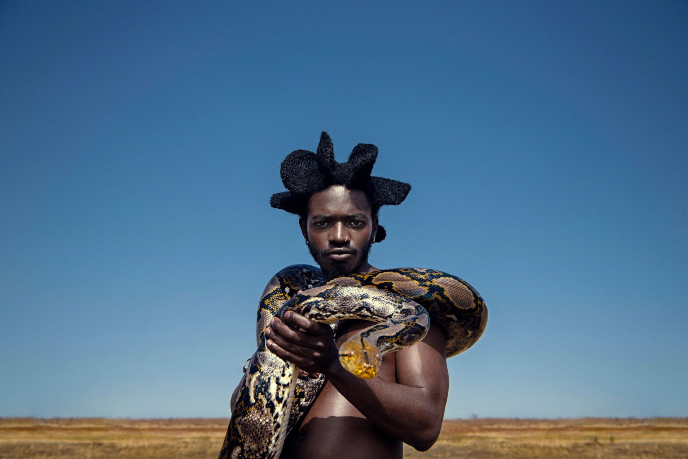
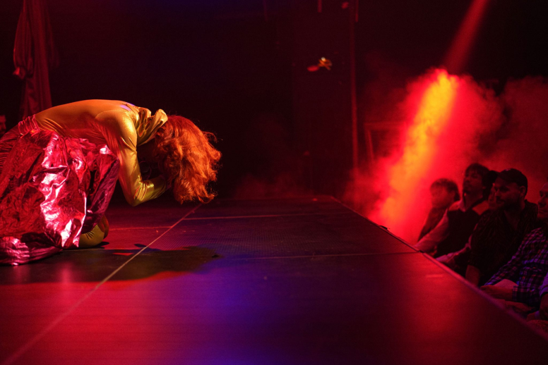

What’s on

Thu 12 Oct 2023
Desire Marea
[South Africa]
“Transform has changed the way audiences experience Leeds”
The Guardian
What’s new


One month to go — With one month to go until Transform 23, we’re today announcing a series of new commissions, DJ sets and immersive encounters to deepen your experience of the festival.
If walls could talk — Opening the festival alongside Ásrún Magnúsdóttir’s SECRETS, Transform’s Young Curators present IF WALLS COULD TALK.